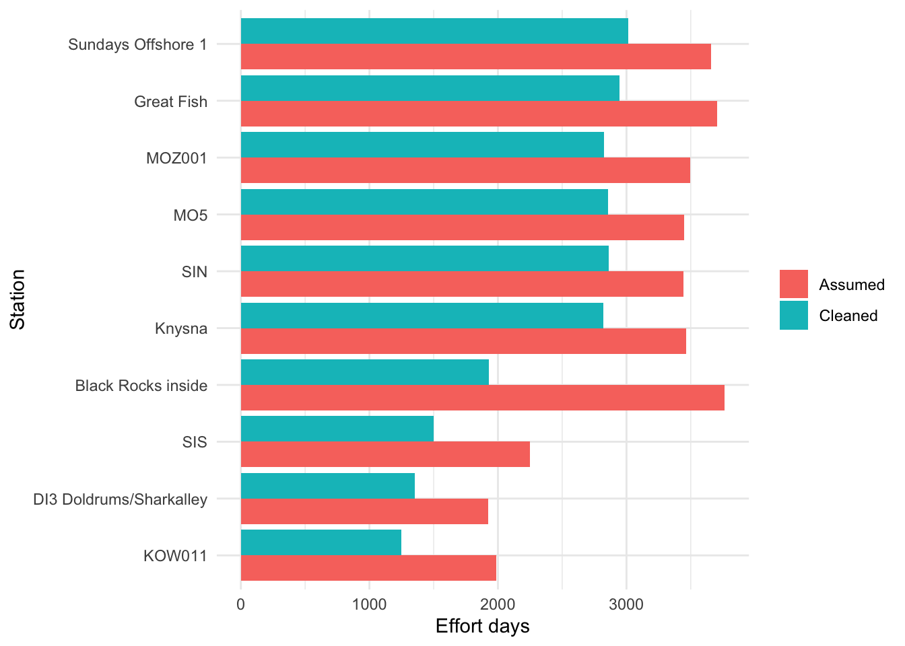

ATAP Workshop: Telemetry Quality Control
The first take-home message is that telemetry data are generally messy and need cleaning.
One of the most time-consuming aspects of any analysis is cleaning datasets and running quality controls so that the analyses that follow are robust and repeatable.
Some of these are standard data science concepts, while others are more specific to acoustic telemetry data.
Fundamentally, acoustic telemetry projects usually consist of three or four core datasets:
- detections
- biometrics or tagging metadata
- receiver metadata
- release locations, depending on how the project metadata are organised
This workflow is based broadly on the formats currently used in ATAP data reports distributed to the telemetry community in southern Africa.
If you are using data that have been uploaded to and downloaded from Fathom, you may need to slightly adjust the column names or file structures. However, the workflow should introduce the core coding concepts so that you can adapt them to other telemetry datasets.
Load packages
We start by loading the packages needed for data wrangling, date handling, cleaning column names, and working with text strings.
The tidyverse loads the core data wrangling and plotting packages. The lubridate package is especially useful for working with dates and times.
Biometrics metadata
We begin with the tagging metadata. This is often the most user-specific dataset because each project records tagging information slightly differently.
But lets use this small biometrics example dataset
ReleaseDate Serial.no Transmitter Size Species group Release Sex
1 15/07/2021 A69-9001-5211 5211 215 Bronze Whaler SUB PSJ f
2 15/07/2021 A69-9001-5212 5212 1810 Brinze Whaler SUB PSJ M
3 15/07/2021 A69-9001-64673 64673 187 Bronze Whaler SUB psj f
4 15/07/2021 A69-9001-64674 64674 199 Bronze Whaler SUB PSJ m
5 15/07/2021 A69-9001-64675 64675 202 Bronze Whaler SUB PSJ M
Recaptured tag.life tag.end
1 Y 3650 20/08/2025
2 n 3650 13/07/2031
3 N 3650 13/07/2031
4 n 3650 13/07/2031
5 N 3650 13/07/2031Convert the data to a tibble. Tibbles are the modern tidyverse version of a data frame and give a cleaner printout of column types and structure.
# A tibble: 5 × 11
ReleaseDate Serial.no Transmitter Size Species group Release Sex Recaptured
<chr> <chr> <int> <int> <chr> <chr> <chr> <chr> <chr>
1 15/07/2021 A69-9001… 5211 215 "Bronz… SUB PSJ f Y
2 15/07/2021 A69-9001… 5212 1810 "Brinz… SUB PSJ M n
3 15/07/2021 A69-9001… 64673 187 "Bronz… SUB psj f N
4 15/07/2021 A69-9001… 64674 199 "Bronz… SUB PSJ m n
5 15/07/2021 A69-9001… 64675 202 "Bronz… SUB PSJ M N
# ℹ 2 more variables: tag.life <int>, tag.end <chr>One of the first things to notice is that the column names use a mix of capital letters, lower-case letters, and separators. We can clean these using janitor::clean_names().
# A tibble: 5 × 11
release_date serial_no transmitter size species group release sex
<chr> <chr> <int> <int> <chr> <chr> <chr> <chr>
1 15/07/2021 A69-9001-5211 5211 215 "Bronze Wha… SUB PSJ f
2 15/07/2021 A69-9001-5212 5212 1810 "Brinze Wha… SUB PSJ M
3 15/07/2021 A69-9001-64673 64673 187 "Bronze Wha… SUB psj f
4 15/07/2021 A69-9001-64674 64674 199 "Bronze Wha… SUB PSJ m
5 15/07/2021 A69-9001-64675 64675 202 "Bronze Wha… SUB PSJ M
# ℹ 3 more variables: recaptured <chr>, tag_life <int>, tag_end <chr>Format dates and text fields
Dates are one of the trickiest parts of telemetry workflows. If dates are formatted as 2025-12-12, base R and lubridate::ymd() usually understand them. If dates are formatted as 12/12/2025, you often need lubridate::dmy().
We also standardise text fields so that joins and summaries behave as expected.
Check the structure of the cleaned data.
Rows: 5
Columns: 11
$ release_date <date> 2021-07-15, 2021-07-15, 2021-07-15, 2021-07-15, 2021-07-…
$ serial_no <chr> "A69-9001-5211", "A69-9001-5212", "A69-9001-64673", "A69-…
$ transmitter <chr> "5211", "5212", "64673", "64674", "64675"
$ size <int> 215, 1810, 187, 199, 202
$ species <chr> "Bronze Whaler", "Brinze Whaler", "Bronze Whaler", "Bronz…
$ group <chr> "SUB", "SUB", "SUB", "SUB", "SUB"
$ release <chr> "PSJ", "PSJ", "PSJ", "PSJ", "PSJ"
$ sex <chr> "F", "M", "F", "M", "M"
$ recaptured <chr> "Y", "N", "N", "N", "N"
$ tag_life <int> 3650, 3650, 3650, 3650, 3650
$ tag_end <date> 2025-08-20, 2031-07-13, 2031-07-13, 2031-07-13, 2031-07-1…# A tibble: 5 × 11
release_date serial_no transmitter size species group release sex
<date> <chr> <chr> <int> <chr> <chr> <chr> <chr>
1 2021-07-15 A69-9001-5211 5211 215 "Bronze Wha… SUB PSJ F
2 2021-07-15 A69-9001-5212 5212 1810 "Brinze Wha… SUB PSJ M
3 2021-07-15 A69-9001-64673 64673 187 "Bronze Wha… SUB PSJ F
4 2021-07-15 A69-9001-64674 64674 199 "Bronze Wha… SUB PSJ M
5 2021-07-15 A69-9001-64675 64675 202 "Bronze Wha… SUB PSJ M
# ℹ 3 more variables: recaptured <chr>, tag_life <int>, tag_end <date>Check species names
Let us query the species column.
# A tibble: 3 × 2
species n
<chr> <int>
1 "Brinze Whaler" 1
2 "Bronze Whaler" 3
3 "Bronze Whaler " 1This shows how R treats spelling differences and trailing spaces as different values. We can trim spaces and recode obvious spelling mistakes.
Check size data
Now inspect the size data.
# A tibble: 5 × 2
transmitter size
<chr> <int>
1 5212 1810
2 5211 215
3 64675 202
4 64674 199
5 64673 187Some packages share function names. For example, select() can be masked by other packages. If select() behaves strangely, use dplyr::select() so R knows exactly which function you mean.
In this case, one transmitter has a size value that appears to have been entered in the wrong units. We can fix this using a vectorised if_else() statement.
One final check.
# A tibble: 5 × 11
release_date serial_no transmitter size species group release sex
<date> <chr> <chr> <dbl> <chr> <chr> <chr> <chr>
1 2021-07-15 A69-9001-5211 5211 215 Bronze Whal… SUB PSJ F
2 2021-07-15 A69-9001-5212 5212 181 Bronze Whal… SUB PSJ M
3 2021-07-15 A69-9001-64673 64673 187 Bronze Whal… SUB PSJ F
4 2021-07-15 A69-9001-64674 64674 199 Bronze Whal… SUB PSJ M
5 2021-07-15 A69-9001-64675 64675 202 Bronze Whal… SUB PSJ M
# ℹ 3 more variables: recaptured <chr>, tag_life <int>, tag_end <date>Export the clean biometrics file for later use.
Detection data
Load the detections using readr::read_csv(). This imports directly to a tibble and usually does a good job of detecting column types.
Check the top and bottom of the dataset.
# A tibble: 6 × 10
`Date and Time (UTC)` Receiver Transmitter `Sensor Value` `Sensor Unit`
<dttm> <chr> <chr> <lgl> <lgl>
1 2020-11-20 12:58:49 VR2AR-549803 A69-9001-14787 NA NA
2 2020-11-20 12:59:50 VR2AR-549803 A69-9001-14787 NA NA
3 2020-11-20 13:01:18 VR2AR-549803 A69-9001-14787 NA NA
4 2020-11-20 13:02:40 VR2AR-549803 A69-9001-14787 NA NA
5 2020-11-20 13:03:47 VR2AR-549803 A69-9001-14787 NA NA
6 2020-11-20 13:04:26 VR2AR-549803 A69-9001-14787 NA NA
# ℹ 5 more variables: `Station Name` <chr>, Latitude <dbl>, Longitude <dbl>,
# `Transmitter Name` <chr>, `Transmitter Serial` <dbl># A tibble: 6 × 10
`Date and Time (UTC)` Receiver Transmitter `Sensor Value` `Sensor Unit`
<dttm> <chr> <chr> <lgl> <lgl>
1 2022-01-25 12:00:28 VR2AR-545744 A69-9001-5211 NA NA
2 2022-01-25 12:01:24 VR2AR-545744 A69-9001-5211 NA NA
3 2022-01-25 12:02:29 VR2AR-545744 A69-9001-5211 NA NA
4 2022-01-25 12:03:54 VR2AR-545744 A69-9001-5211 NA NA
5 2022-01-25 12:05:19 VR2AR-545744 A69-9001-5211 NA NA
6 2022-01-25 12:06:42 VR2AR-545744 A69-9001-5211 NA NA
# ℹ 5 more variables: `Station Name` <chr>, Latitude <dbl>, Longitude <dbl>,
# `Transmitter Name` <chr>, `Transmitter Serial` <dbl>Clean the column names.
# A tibble: 6 × 10
date_and_time_utc receiver transmitter sensor_value sensor_unit station_name
<dttm> <chr> <chr> <lgl> <lgl> <chr>
1 2020-11-20 12:58:49 VR2AR-5… A69-9001-1… NA NA ARN001
2 2020-11-20 12:59:50 VR2AR-5… A69-9001-1… NA NA ARN001
3 2020-11-20 13:01:18 VR2AR-5… A69-9001-1… NA NA ARN001
4 2020-11-20 13:02:40 VR2AR-5… A69-9001-1… NA NA ARN001
5 2020-11-20 13:03:47 VR2AR-5… A69-9001-1… NA NA ARN001
6 2020-11-20 13:04:26 VR2AR-5… A69-9001-1… NA NA ARN001
# ℹ 4 more variables: latitude <dbl>, longitude <dbl>, transmitter_name <chr>,
# transmitter_serial <dbl>Time zones
Time is critical in telemetry. Receiver detections are often recorded in UTC, but analyses may need to be conducted in local time.
Here we convert detection timestamps from UTC to South African local time. South Africa uses SAST, which is UTC+2, and does not use daylight saving time.
Check the conversion.
# A tibble: 6 × 10
timestamp receiver transmitter sensor_value sensor_unit station_name
<dttm> <chr> <chr> <lgl> <lgl> <chr>
1 2020-11-20 14:58:49 VR2AR-5… A69-9001-1… NA NA ARN001
2 2020-11-20 14:59:50 VR2AR-5… A69-9001-1… NA NA ARN001
3 2020-11-20 15:01:18 VR2AR-5… A69-9001-1… NA NA ARN001
4 2020-11-20 15:02:40 VR2AR-5… A69-9001-1… NA NA ARN001
5 2020-11-20 15:03:47 VR2AR-5… A69-9001-1… NA NA ARN001
6 2020-11-20 15:04:26 VR2AR-5… A69-9001-1… NA NA ARN001
# ℹ 4 more variables: latitude <dbl>, longitude <dbl>, transmitter_name <chr>,
# transmitter_serial <dbl>Clean detection fields
There are some naming irregularities in the detection file. We also remove columns that are not useful for this workshop and extract the numeric receiver ID.
Check transmitters
Let us look at the transmitters in the detection data.
# A tibble: 9 × 1
transmitter
<chr>
1 14787
2 14786
3 14785
4 5211
5 64673
6 64675
7 5212
8 64674
9 5211a There are more transmitters in the detection data than in the biometrics file.
# A tibble: 9 × 2
transmitter detections
<chr> <int>
1 14785 219
2 14786 146
3 14787 6156
4 5211 4638
5 5211a 200
6 5212 1632
7 64673 12102
8 64674 3451
9 64675 5524We can compare transmitters in the detections against the biometrics file using joins.
The anti_join() shows transmitters in the detections that are not in the biometrics file.
# A tibble: 4 × 2
transmitter n
<chr> <int>
1 14787 6156
2 14785 219
3 5211a 200
4 14786 146The semi_join() keeps only detection records with transmitters that are present in the biometrics file.
Investigate suspicious transmitter names
What is tag 5211a?
# A tibble: 2 × 2
transmitter n
<chr> <int>
1 5211 4638
2 5211a 200Look at the detections in time order.
# A tibble: 4,838 × 6
timestamp receiver station_name latitude longitude transmitter
<dttm> <chr> <chr> <dbl> <dbl> <chr>
1 2021-07-23 14:49:29 546770 PSJ002 -31.6 29.6 5211
2 2021-07-23 14:49:29 546770 PSJ002 -31.6 29.6 5211
3 2021-07-23 14:49:29 546770 PSJ002 -31.6 29.6 5211a
4 2021-07-23 14:51:16 546770 PSJ002 -31.6 29.6 5211
5 2021-07-23 14:51:16 546770 PSJ002 -31.6 29.6 5211
6 2021-07-23 14:51:16 546770 PSJ002 -31.6 29.6 5211a
7 2021-07-23 14:52:22 546770 PSJ002 -31.6 29.6 5211
8 2021-07-23 14:52:22 546770 PSJ002 -31.6 29.6 5211
9 2021-07-23 14:52:22 546770 PSJ002 -31.6 29.6 5211a
10 2021-07-23 14:53:08 546770 PSJ002 -31.6 29.6 5211
# ℹ 4,828 more rowsIt appears that 5211a detections are duplicates of 5211. We can inspect the duplicated records directly.
Code
# A tibble: 4,838 × 6
# Groups: timestamp, station_name [2,319]
timestamp receiver station_name latitude longitude transmitter
<dttm> <chr> <chr> <dbl> <dbl> <chr>
1 2021-07-23 14:49:29 546770 PSJ002 -31.6 29.6 5211
2 2021-07-23 14:49:29 546770 PSJ002 -31.6 29.6 5211
3 2021-07-23 14:49:29 546770 PSJ002 -31.6 29.6 5211a
4 2021-07-23 14:51:16 546770 PSJ002 -31.6 29.6 5211
5 2021-07-23 14:51:16 546770 PSJ002 -31.6 29.6 5211
6 2021-07-23 14:51:16 546770 PSJ002 -31.6 29.6 5211a
7 2021-07-23 14:52:22 546770 PSJ002 -31.6 29.6 5211
8 2021-07-23 14:52:22 546770 PSJ002 -31.6 29.6 5211
9 2021-07-23 14:52:22 546770 PSJ002 -31.6 29.6 5211a
10 2021-07-23 14:53:08 546770 PSJ002 -31.6 29.6 5211
# ℹ 4,828 more rowsNow remove transmitters that do not have biometrics metadata.
An alternative is to use a semi_join().
Check the remaining transmitters.
Check duplicate detections
Now check whether there are exact duplicate records.
# A tibble: 4,638 × 6
# Groups: timestamp, receiver, station_name, latitude, longitude, transmitter
# [2,319]
timestamp receiver station_name latitude longitude transmitter
<dttm> <chr> <chr> <dbl> <dbl> <chr>
1 2021-07-23 14:49:29 546770 PSJ002 -31.6 29.6 5211
2 2021-07-23 14:51:16 546770 PSJ002 -31.6 29.6 5211
3 2021-07-23 14:52:22 546770 PSJ002 -31.6 29.6 5211
4 2021-07-23 14:53:08 546770 PSJ002 -31.6 29.6 5211
5 2021-07-23 14:53:53 546770 PSJ002 -31.6 29.6 5211
6 2021-07-23 14:54:40 546770 PSJ002 -31.6 29.6 5211
7 2021-07-23 14:55:28 546770 PSJ002 -31.6 29.6 5211
8 2021-07-23 14:56:17 546770 PSJ002 -31.6 29.6 5211
9 2021-07-23 14:57:09 546770 PSJ002 -31.6 29.6 5211
10 2021-07-23 14:58:08 546770 PSJ002 -31.6 29.6 5211
# ℹ 4,628 more rowsDuplicate detections are common in telemetry datasets. They can arise from manual file handling, accidental import of the same receiver file more than once, or simultaneous detections across neighbouring receivers.
In this example we group across all columns so that the check only returns exact duplicates.
Export the cleaned detections for later use.
Receiver metadata
Receiver metadata are often one of the most challenging parts of telemetry workflows. Each row usually represents a physical receiver deployment, but these rows do not always translate cleanly into continuous station listening effort.
Receivers may be lost, recovered late, replaced before recovery, or redeployed with missing or approximate times. Because downstream analyses often rely on receiver effort, we need to reconstruct when each station was actually listening.
ATAP metadata are reported in SAST.
# A tibble: 6 × 9
station_name receiver_name installation_name project_name
<chr> <chr> <chr> <chr>
1 2 mile 1 VR2W-125564 Sodwana ORI
2 2 mile 1 VR2W-125564 Sodwana ORI
3 2 mile 1 VR2W-119633 Sodwana ORI
4 2 mile 1 VR2W-119107 Sodwana ORI
5 2 mile 1 VR2W-123252 Sodwana ORI
6 2 mile 1 VR2W-133801 Sodwana ORI
# ℹ 5 more variables: deploymentdatetime_timestamp <dttm>,
# recoverydatetime_timestamp <dttm>, station_latitude <dbl>,
# station_longitude <dbl>, status <chr>Clean the receiver metadata.
Code
receiver <- receiver %>%
janitor::clean_names() %>%
mutate(
receiver = sub(".*-", "", receiver_name),
station_name = stringr::str_squish(station_name),
installation_name = stringr::str_squish(installation_name),
status = stringr::str_to_lower(status)
) %>%
dplyr::select(-project_name, -receiver_name) %>%
rename(
longitude = station_longitude,
latitude = station_latitude
)For downstream packages such as actel and rsp, deployment and recovery times usually need to be accurate. If researchers have not reported exact times, you may need to create reasonable deployment windows based on field notes or rollover dates.
Count deployment rows
Look at the number of deployment rows per receiver station.
# A tibble: 459 × 2
station_name n
<chr> <int>
1 Cape Recife Offshore 1 21
2 AB001 20
3 AB002 20
4 AB003 20
5 AB004 20
6 AB005 20
7 AB006 20
8 AB007 20
9 Bird Island 1 20
10 JP002 20
11 JP003 20
12 Sundays Offshore 1 20
13 Woody Cape Offshore 1 20
14 Central 60m 19
15 JP001 19
16 MB002 19
17 St Croix_ATAP 19
18 Woody Cape West 19
19 BRE03 18
20 CSB001 18
21 CSB002 18
22 CSB003 18
23 MB001 18
24 MB003 18
25 PA001 18
26 PA002 18
27 PA003 18
28 PSJ001 18
29 PSJ002 18
30 CP002 17
# ℹ 429 more rowsCheck for exact duplicate records.
Check station coordinates
Receiver ID numbers move around the study region, but station names should usually stay constant. Therefore, coordinate consistency should be checked by station_name, not by receiver ID.
Lost receivers
Some receivers are marked as lost. Depending on the analysis, we may want to remove lost receiver periods from effort calculations.
Code
# A tibble: 119 × 5
station_name receiver deploymentdatetime_time…¹ recoverydatetime_tim…² status
<chr> <chr> <dttm> <dttm> <chr>
1 7 Mile 126055 2015-03-09 08:30:00 2016-06-30 00:00:00 lost
2 AB006 119618 2016-04-15 09:48:00 2016-10-17 00:00:00 lost
3 ALS001 119097 2020-09-17 14:00:00 2021-08-30 14:30:00 lost
4 ALS001 112338 2021-08-30 14:30:00 2022-10-12 11:27:00 lost
5 Berg001 112441 2018-03-13 10:55:00 2019-02-09 12:00:00 lost
6 Bluff 30m <NA> 2024-02-29 08:09:00 2024-08-27 00:00:00 lost
7 Blythedale 129003 2016-06-28 00:00:00 2017-08-04 00:00:00 lost
8 BR001 119634 2019-07-04 11:24:00 2020-02-24 12:30:00 lost
9 BR002 112462 2021-12-10 09:07:00 2023-02-28 00:00:00 lost
10 BRD000 545677 2020-10-05 08:18:00 2021-04-01 00:00:00 lost
# ℹ 109 more rows
# ℹ abbreviated names: ¹deploymentdatetime_timestamp,
# ²recoverydatetime_timestampThis can be deceptive because lost receivers may still have an end date. Often this is not the actual recovery date, but the date of the next deployment used to close the deployment window.
We can check whether there are detections during lost receiver periods.
Code
# A tibble: 0 × 10
# ℹ 10 variables: timestamp <dttm>, receiver.x <chr>, station_name <chr>,
# latitude <dbl>, longitude <dbl>, transmitter <chr>, receiver.y <chr>,
# deploymentdatetime_timestamp <dttm>, recoverydatetime_timestamp <dttm>,
# status <chr>A key question is whether detections from receivers marked as lost should be retained. If a receiver was later found and uploaded, detections may be real, but the true recovery date may still be ambiguous.
For this workshop, we remove lost receiver records from later effort calculations.
Receiver deployment gaps
Next we look at time gaps between deployments. Typically, we would expect gaps of hours to days, or perhaps a week or two if spare units were not available or if field teams had to wait for a weather window.
Code
receiver <- receiver %>%
arrange(station_name, deploymentdatetime_timestamp) %>%
group_by(station_name) %>%
mutate(
previous_recovery = lag(recoverydatetime_timestamp),
deployment_gap_days = as.numeric(
difftime(
deploymentdatetime_timestamp,
previous_recovery,
units = "days"
)
)
) %>%
arrange(desc(deployment_gap_days))Create a table of consecutive deployment gaps greater than 21 days.
Code
receiver_gaps <- receiver %>%
ungroup() %>%
arrange(station_name, deploymentdatetime_timestamp) %>%
group_by(station_name) %>%
mutate(
receiver_a = receiver,
deploymentdatetime_timestamp_a = deploymentdatetime_timestamp,
recoverydatetime_timestamp_a = recoverydatetime_timestamp,
receiver_b = lead(receiver),
deploymentdatetime_timestamp_b = lead(deploymentdatetime_timestamp),
recoverydatetime_timestamp_b = lead(recoverydatetime_timestamp),
gap_days = as.numeric(
difftime(
deploymentdatetime_timestamp_b,
recoverydatetime_timestamp_a,
units = "days"
)
)
) %>%
filter(
!is.na(gap_days),
gap_days > 21
) %>%
dplyr::select(
station_name,
receiver_a,
deploymentdatetime_timestamp_a,
recoverydatetime_timestamp_a,
receiver_b,
deploymentdatetime_timestamp_b,
recoverydatetime_timestamp_b,
gap_days
) %>%
arrange(desc(gap_days))
receiver_gaps# A tibble: 126 × 8
# Groups: station_name [98]
station_name receiver_a deploymentdatetime_t…¹ recoverydatetime_tim…²
<chr> <chr> <dttm> <dttm>
1 Black Rocks inside 112814 2015-03-30 00:00:00 2016-03-29 00:00:00
2 Great Fish 119625 2020-06-19 09:50:00 2021-10-29 09:30:00
3 KOW011 112384 2019-02-08 00:00:00 2020-10-15 11:00:00
4 MOZ001 112345 2019-06-07 09:30:00 2020-02-05 14:30:00
5 Knysna 102295 2015-11-18 06:33:00 2016-09-12 10:29:00
6 SIS 545978 2019-03-30 15:28:00 2019-12-11 11:28:00
7 DI3 Doldrums/Sharka… 126264 2018-03-23 11:50:00 2018-12-10 11:30:00
8 DI2 Outside Geyser 126263 2018-03-23 11:30:00 2018-12-10 12:15:00
9 JDAM 2 126261 2018-03-23 12:20:00 2018-12-10 13:55:00
10 Gansbaai Harbour 126266 2018-03-28 14:15:00 2018-12-10 15:40:00
# ℹ 116 more rows
# ℹ abbreviated names: ¹deploymentdatetime_timestamp_a,
# ²recoverydatetime_timestamp_a
# ℹ 4 more variables: receiver_b <chr>, deploymentdatetime_timestamp_b <dttm>,
# recoverydatetime_timestamp_b <dttm>, gap_days <dbl>These long gaps require interpretation. In some cases, an acoustic release may not have responded and the receiver was recovered during a later rollover. In others, a receiver may have been missed on a dive and a new unit deployed on a new mooring.
Overlapping deployments
Now we check for overlapping deployment windows at the same station.
Some overlaps may be short and reflect normal rollover logistics. Others may be hundreds of days long and indicate that a receiver was recovered much later, even though another unit had already been deployed.
Code
receiver_overlaps <- receiver %>%
ungroup() %>%
mutate(row_id = row_number()) %>%
inner_join(
receiver %>%
ungroup() %>%
mutate(row_id_compare = row_number()),
by = "station_name",
suffix = c("_a", "_b"),
relationship = "many-to-many"
) %>%
filter(
row_id < row_id_compare,
deploymentdatetime_timestamp_a < recoverydatetime_timestamp_b,
recoverydatetime_timestamp_a > deploymentdatetime_timestamp_b
) %>%
mutate(
overlap_start = pmax(
deploymentdatetime_timestamp_a,
deploymentdatetime_timestamp_b
),
overlap_end = pmin(
recoverydatetime_timestamp_a,
recoverydatetime_timestamp_b
),
overlap_days = as.numeric(
difftime(
overlap_end,
overlap_start,
units = "days"
)
)
) %>%
filter(overlap_days > 1) %>%
dplyr::select(
station_name,
receiver_a,
deploymentdatetime_timestamp_a,
recoverydatetime_timestamp_a,
receiver_b,
deploymentdatetime_timestamp_b,
recoverydatetime_timestamp_b,
overlap_start,
overlap_end,
overlap_days
) %>%
arrange(desc(overlap_days))
receiver_overlaps# A tibble: 59 × 10
station_name receiver_a deploymentdatetime_timestamp_a recoverydatetime_tim…¹
<chr> <chr> <dttm> <dttm>
1 Kowie 120162 2019-12-04 12:00:00 2023-05-31 11:03:00
2 Mamoli 1 112381 2020-12-12 00:00:00 2023-12-02 00:00:00
3 MOZ001 120172 2021-12-09 00:00:00 2024-12-10 00:00:00
4 Evans Peak 113320 2016-06-02 00:00:00 2018-07-11 09:29:00
5 MOZ001 120172 2021-12-09 00:00:00 2024-12-10 00:00:00
6 Kowie 120162 2019-12-04 12:00:00 2023-05-31 11:03:00
7 WB002_b 120157 2021-11-15 10:04:00 2022-07-19 11:21:00
8 BRD003 546782 2017-07-02 12:46:00 2018-02-28 14:49:00
9 MB003 545677 2019-11-15 09:00:00 2020-07-03 13:42:00
10 WB002_b 112336 2020-02-26 09:47:00 2022-07-15 00:00:00
# ℹ 49 more rows
# ℹ abbreviated name: ¹recoverydatetime_timestamp_a
# ℹ 6 more variables: receiver_b <chr>, deploymentdatetime_timestamp_b <dttm>,
# recoverydatetime_timestamp_b <dttm>, overlap_start <dttm>,
# overlap_end <dttm>, overlap_days <dbl>Reconstruct receiver effort
Where possible, we want to collapse receiver deployment rows into continuous listening-effort windows per station.
The key idea is that if the next deployment starts before, or shortly after, the current running recovery date, we treat the station as part of the same listening-effort window. If the gap is longer than our tolerance, we start a new effort window.
Code
gap_tolerance_days <- 21
receiver_effort <- receiver %>%
ungroup() %>%
filter(status != "lost") %>%
arrange(station_name, deploymentdatetime_timestamp) %>%
group_by(station_name) %>%
mutate(
recovery_for_effort = coalesce(
recoverydatetime_timestamp,
deploymentdatetime_timestamp
),
recovery_num = as.numeric(recovery_for_effort),
running_effort_end_num = cummax(recovery_num),
previous_effort_end = as.POSIXct(
lag(running_effort_end_num),
origin = "1970-01-01",
tz = "Africa/Johannesburg"
),
gap_from_previous = as.numeric(
difftime(
deploymentdatetime_timestamp,
previous_effort_end,
units = "days"
)
),
new_effort_window = case_when(
is.na(gap_from_previous) ~ 1,
gap_from_previous > gap_tolerance_days ~ 1,
TRUE ~ 0
),
effort_window = cumsum(new_effort_window)
) %>%
group_by(station_name, effort_window) %>%
summarise(
effort_start = min(deploymentdatetime_timestamp, na.rm = TRUE),
effort_end = max(recoverydatetime_timestamp, na.rm = TRUE),
n_receiver_deployments = n(),
receivers_used = paste(unique(receiver), collapse = ", "),
.groups = "drop"
) %>%
arrange(station_name, effort_start)
receiver_effort# A tibble: 565 × 6
station_name effort_window effort_start effort_end
<chr> <dbl> <dttm> <dttm>
1 2 mile 1 1 2015-07-22 00:00:00 2025-01-18 13:20:00
2 2 mile 2 1 2015-07-22 00:00:00 2025-01-18 12:52:00
3 2MRR1 1 2016-05-11 00:00:00 2018-03-21 00:00:00
4 2MRR2 1 2016-05-11 00:00:00 2018-03-21 00:00:00
5 2MRR3 1 2016-05-11 00:00:00 2018-03-21 00:00:00
6 2MRR4 1 2016-05-11 00:00:00 2018-03-21 00:00:00
7 9 mile 1 1 2015-07-22 00:00:00 2025-01-18 12:01:00
8 9 mile 2 1 2015-07-22 00:00:00 2025-01-18 11:54:00
9 AB001 1 2015-04-21 06:33:00 2025-07-20 11:40:00
10 AB002 1 2015-04-21 06:50:00 2025-07-20 11:28:00
# ℹ 555 more rows
# ℹ 2 more variables: n_receiver_deployments <int>, receivers_used <chr>Compare assumed and cleaned receiver effort
Researchers sometimes assume that receiver effort runs continuously from the minimum deployment date to the maximum recovery date at each station.
That can overestimate listening effort when there are long gaps between deployments. Here we compare that simple assumption against the cleaned effort windows.
Code
assumed_station_effort <- receiver %>%
filter(status != "lost") %>%
group_by(station_name) %>%
summarise(
assumed_start = min(deploymentdatetime_timestamp, na.rm = TRUE),
assumed_end = max(recoverydatetime_timestamp, na.rm = TRUE),
assumed_effort_days = as.numeric(
difftime(
assumed_end,
assumed_start,
units = "days"
)
),
.groups = "drop"
)Calculate cleaned effort by summing the effort windows.
Now compare assumed and cleaned effort.
Code
effort_comparison <- assumed_station_effort %>%
left_join(
cleaned_station_effort,
by = "station_name"
) %>%
mutate(
overestimation_days =
assumed_effort_days - cleaned_effort_days,
overestimation_percent =
(
overestimation_days /
cleaned_effort_days
) * 100
) %>%
arrange(desc(overestimation_days))
effort_comparison# A tibble: 438 × 8
station_name assumed_start assumed_end assumed_effort_days
<chr> <dttm> <dttm> <dbl>
1 Black Rocks insi… 2015-03-30 00:00:00 2025-07-20 10:13:00 3765.
2 Great Fish 2015-03-12 10:10:00 2025-05-05 15:00:00 3707.
3 SIS 2015-12-04 10:35:00 2022-02-01 14:37:00 2251.
4 KOW011 2019-02-08 00:00:00 2024-07-16 16:30:00 1986.
5 MOZ001 2015-05-14 08:00:00 2024-12-10 00:00:00 3498.
6 Knysna 2015-06-10 12:20:00 2024-12-04 18:39:00 3465.
7 Sundays Offshore… 2015-05-13 00:00:00 2025-05-15 11:42:00 3655.
8 MO5 2015-12-09 11:10:00 2025-05-16 10:15:00 3446.
9 SIN 2015-12-04 09:56:00 2025-05-06 13:12:00 3441.
10 DI3 Doldrums/Sha… 2015-11-06 09:20:00 2021-02-13 11:00:00 1926.
# ℹ 428 more rows
# ℹ 4 more variables: cleaned_effort_days <dbl>, n_effort_windows <int>,
# overestimation_days <dbl>, overestimation_percent <dbl>Summarise the overall difference.
Code
overall_effort_summary <- effort_comparison %>%
summarise(
total_assumed_days = sum(assumed_effort_days, na.rm = TRUE),
total_cleaned_days = sum(cleaned_effort_days, na.rm = TRUE),
total_overestimate_days =
total_assumed_days - total_cleaned_days,
overall_overestimate_percent =
(
total_overestimate_days /
total_cleaned_days
) * 100
)
print(overall_effort_summary)# A tibble: 1 × 4
total_assumed_days total_cleaned_days total_overestimate_days
<dbl> <dbl> <dbl>
1 710276. 681355. 28921.
# ℹ 1 more variable: overall_overestimate_percent <dbl>Plot effort overestimation
This quick plot shows the top ten stations where assuming continuous effort would have most strongly overestimated listening effort.
Code
effort_comparison %>%
slice_max(overestimation_days, n = 10) %>%
dplyr::select(
station_name,
assumed_effort_days,
cleaned_effort_days
) %>%
pivot_longer(
-station_name,
names_to = "effort_type",
values_to = "effort_days"
) %>%
mutate(
effort_type = recode(
effort_type,
assumed_effort_days = "Assumed",
cleaned_effort_days = "Cleaned"
)
) %>%
ggplot(aes(
x = reorder(station_name, effort_days),
y = effort_days,
fill = effort_type
)) +
geom_col(position = "dodge") +
coord_flip() +
labs(
x = "Station",
y = "Effort days",
fill = NULL
) +
theme_minimal()
It might seem like a lot of effort to work this out for a 5% overestimate of time, but if you’re relying on some of these receivers as an indicator of core habitat then you’re going to get pretty significant zero-inflation as a result and bias your results. Therefore taking the time to really understand you foundational datasets gives you a better chance to defend your downstream analysis and you now know the array a little bit better.
Count unique receiver stations
How many unique receiver stations have been deployed in the ATAP network over time? Remember that you can’t rely on the obs in your environment to tell you how many stations were deployed, you know need to use distinct() since station name could appear on several rows.
Add station coordinates back to the effort table.
Export the cleaned receiver effort file.
Release locations
Release data can be built into the biometrics table, but some packages and workflows use a separate release-location file.
Code
# A tibble: 7 × 3
location latitude longitude
<chr> <dbl> <dbl>
1 GB -34.7 19.4
2 FB -34.2 18.6
3 MB -34.2 22.2
4 WLD -34.0 22.6
5 PB -34.1 23.4
6 JB -34.1 25.0
7 PSJ -31.7 29.6Export the cleaned release file if needed.
Wrap-up
In this section we cleaned and checked the three core telemetry metadata tables:
- biometrics
- detections
- receiver metadata
- release sites
The most important lesson is that telemetry quality control is not just about making the data neat. It directly affects downstream estimates of detections, residency, movement, receiver effort, and bias. We’ve done all this without having to open Excel and manually wrangle data. This saves trying to figure out and remember what you clicked, changed or moved, so that you can execute scripts quickly and dig into the interesting stuff.